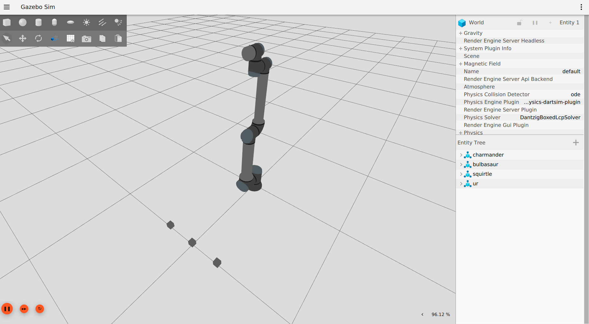

Usage
Launch Files
To launch the simulation, two files can be used:
launch/ur_sim_control.launch.pylaunch/ur_sim_moveit.launch.py
They both start Gazebo, but only the second launches MoveIt! together with it, allowing to plan motions using either MoveGroup interfaces or the Motion Planning panel in Rviz.
So, if only Gazebo and Rviz are needed:
$ ros2 launch ur_simulation_gz ur_sim_control.launch.py ur_type:=ur10e
Which can be tested by using a test script from ur_robot_driver (if installed), in a new terminal:
$ ros2 launch ur_robot_driver test_joint_trajectory_controller.launch.py
If we also want to be able to use MoveIt!, then:
$ ros2 launch ur_simulation_gz ur_sim_moveit.launch.py ur_type:=ur10e
{kind=link}
Note
All the additional launch arguments are described in the launch files themselves.
Customization
Beyond the default usage, the package offers some customization options.
Custom Description
To use a custom robot / scene description, the launch argument description_file can be specified, which allows to pass the absolute path of a custom description to both launchers. Together with it, it could be useful to choose a custom Rviz configuration file and the launch argument rviz_config_file can be passed for that. An example of their usage:
$ ros2 launch ur_simulation_gz ur_sim_control.launch.py ur_type:=ur10e description_file:="/home/ubuntu/ur_gz_test.urdf.xacro" rviz_config_file:="/home/ubuntu/rviz_test.rviz"
tf_prefix
Also here, like in the driver package, it is possible to specify a tf_prefix using the tf_prefix launch argument, but for this package this is not the only step required. Since controller loading is handled differently, it is necessary to define a custom controllers file with the desired tf_prefix. Assuming tf_prefix:="alice_", an example of such file could be:
controller_manager:
ros__parameters:
update_rate: 500 # Hz
joint_state_broadcaster:
type: joint_state_broadcaster/JointStateBroadcaster
joint_trajectory_controller:
type: joint_trajectory_controller/JointTrajectoryController
joint_trajectory_controller:
ros__parameters:
joints:
- alice_shoulder_pan_joint
- alice_shoulder_lift_joint
- alice_elbow_joint
- alice_wrist_1_joint
- alice_wrist_2_joint
- alice_wrist_3_joint
command_interfaces:
- position
state_interfaces:
- position
- velocity
state_publish_rate: 100.0
action_monitor_rate: 20.0
allow_partial_joints_goal: false
constraints:
stopped_velocity_tolerance: 0.2
goal_time: 0.0
alice_shoulder_pan_joint: { trajectory: 0.2, goal: 0.1 }
alice_shoulder_lift_joint: { trajectory: 0.2, goal: 0.1 }
alice_elbow_joint: { trajectory: 0.2, goal: 0.1 }
alice_wrist_1_joint: { trajectory: 0.2, goal: 0.1 }
alice_wrist_2_joint: { trajectory: 0.2, goal: 0.1 }
alice_wrist_3_joint: { trajectory: 0.2, goal: 0.1 }
To load the newly defined file, it is possible to specify its absolute path with the controllers_file argument. Together with it the desired prefix should be also be specified as argument, like in the following example:
$ ros2 launch ur_simulation_gz ur_sim_control.launch.py ur_type:=ur10e tf_prefix:="alice_" controllers_file:="/home/ubuntu/ur_controllers_test.yaml"
Note
The tf_prefix argument is not available for ur_sim_moveit.launch.py, since it would require a custom definition of the moveit config package for properly setting it up.
Custom World
The last customization option allows to instantiate the robot in a proper setup instead of an empty world, like the given launch files do by default. The first step to create a complete simulation is to define a world file (.sdf): for this example we can use a simple custom world test_world.sdf, located it in ur_gz_simulation/doc/resources. For more details about building worlds in Gazebo, it’s possible to check the related tutorial.
To use the new world changes it’s enough to specify its absolute path in the world_file argument:
$ ros2 launch ur_simulation_gz ur_sim_control.launch.py ur_type:=ur10e world_file:=<path_to_gz_simulation>/doc/resources/test_world.sdf
or using MoveIt!
$ ros2 launch ur_simulation_gz ur_sim_moveit.launch.py ur_type:=ur10e world_file:=<path_to_gz_simulation>/doc/resources/test_world.sdf
In this way, when launching the simulation, Gazebo will use the indicated custom world instead of the default empty, like in the following picture.
{kind=link}